云服务器使用与真机推理
本地算力不够怎么办？租一台 L40S 云实例训练，回到工位让检查点驱动真机自主抓取——本实验打通"计算在云、智能在端"的部署闭环，是产品化的关键一跃。
00课程节奏：五星学习法 · 8 段微课（每段 ≤ 15 min）
本实验按五星学习法组织：先用一个真实故障聚焦问题，再激活旧知（EXP-01 采集命令 + EXP-02 训练检查点），接着示证新知（云训练 ↔ 真机推理闭环），然后动手应用新知完成租实例→部署→上传→推理→关机，最后借排障与安全清单融会贯通。全程切成 8 段微课、每段不超过 15 分钟，段间停顿 1~2 分钟消化；纯讲授合计约 100 分钟，其余课时用于动手实操与个别辅导。
| 课段 | 五星阶段 | 时长 | 对应章节 | 本段任务 |
|---|---|---|---|---|
| 课段 1 | 聚焦问题 | 12 min | §01 + §02 前半 | 抛出"本地训不动/忘关机扣费/推理机器人不动"故障，明确本课目标 |
| 课段 2 | 激活旧知 | 8 min | §02 后半 | 用 EXP-01 采集命令与 EXP-02 检查点两条旧知解释推理原理 |
| 课段 3 | 示证新知 | 15 min | §03 | 对照云侧、本地、数据、模型四类物料认识部署清单 |
| 课段 4 | 示证新知 | 12 min | §06（回看 §02 流程） | 看懂"上传→云训→下载→推理→回看"四段链路 |
| 课段 5 | 应用新知 | 15 min | §04 Step1~3 + §5 命令① | 租 L40S 实例、JupyterLab 部署、上传 zip 数据（边讲边演） |
| 课段 6 | 应用新知 | 15 min | §04 Step4~6 + §5 命令②③ | 云端训练 / 取回检查点、真机推理、收工关机释放实例 |
| 课段 7 | 应用新知 | 10 min | §07 | 显存与云租费估算器自测，算清"训多久、花多少" |
| 课段 8 | 融会贯通 | 13 min | §08~§10 | 安全清单收口，排障与思考题拔高迁移 |
讲课提示：课段 1/2 以讲授 + 提问为主；课段 3~4 用清单 + 动画；课段 5~6 边讲边演控制台与命令；课段 7 学员独立完成；课段 8 答疑拔高。段间停顿 1~2 分钟。
01实验目标课段 1 · 聚焦问题 · 12 min
在 gpufree.cn 租用 L40S 实例，选用 LeRobot 镜像，通过 JupyterLab 终端完成 cd /data/lerobot/ + pip install -e . 部署。
把 EXP-02 打包的 zip 数据集上传云端并在 L40S 上完成训练（或直接取回本地已训好的检查点）。
用 lerobot-record --policy.path=…（不带 --teleop）在真机上推理：机器人自主完成 Put red cube into plate。
推理日志出现 Loading weights from local directory、teleop: None、'policy': {…} 输入输出特征声明，且能观察到自动抓取动作；费用方面做到用完即关机。
把"传数据 → 训 → 取模型 → 推 → 评 → 关机"固化成检查单（checklist），是云上作业不烧钱、不出错的工程纪律。
▍云服务器全流程截图（摘自第 11 章，按操作先后排列）
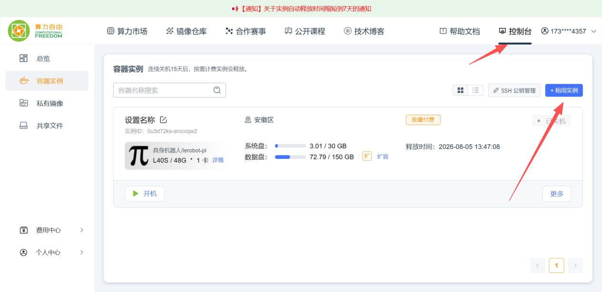
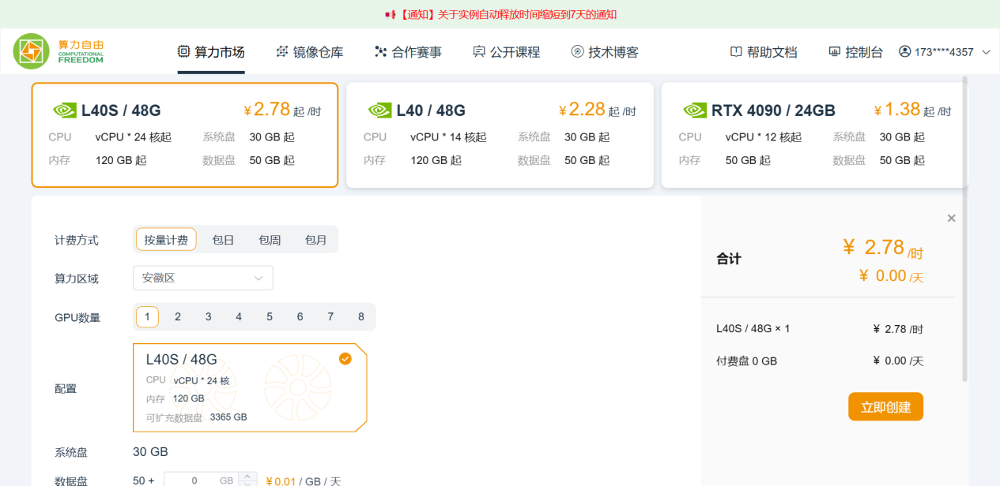
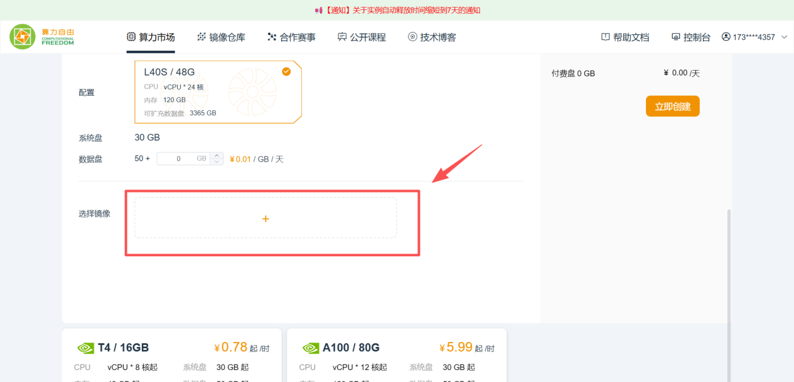
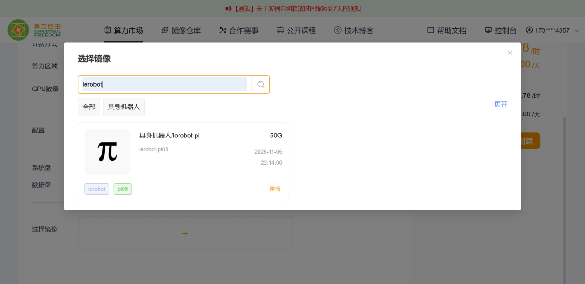
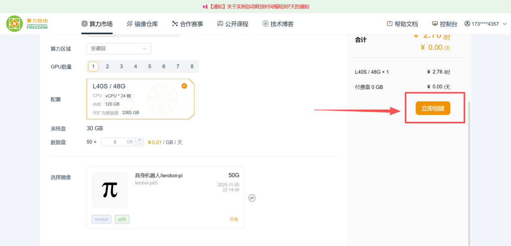
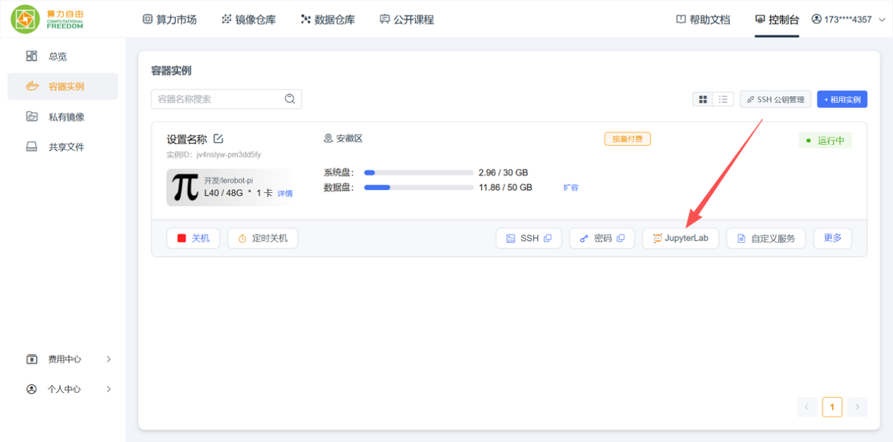
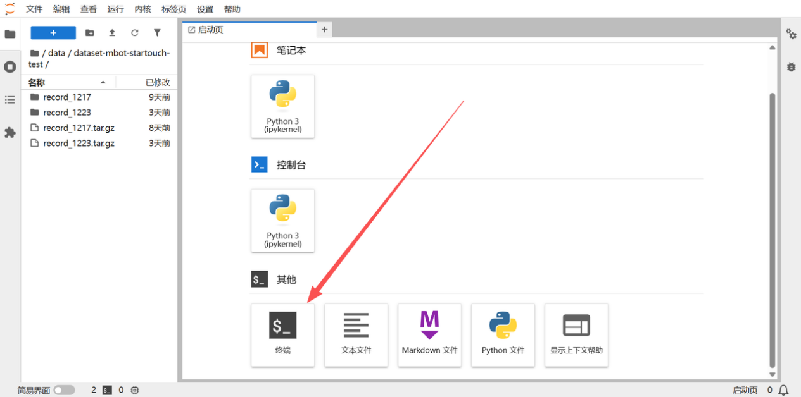
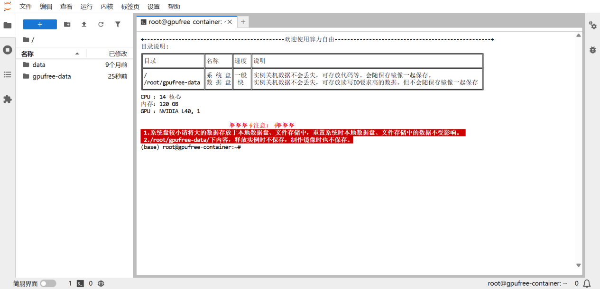
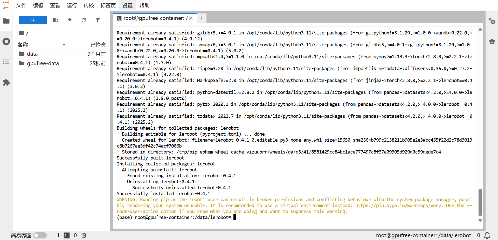
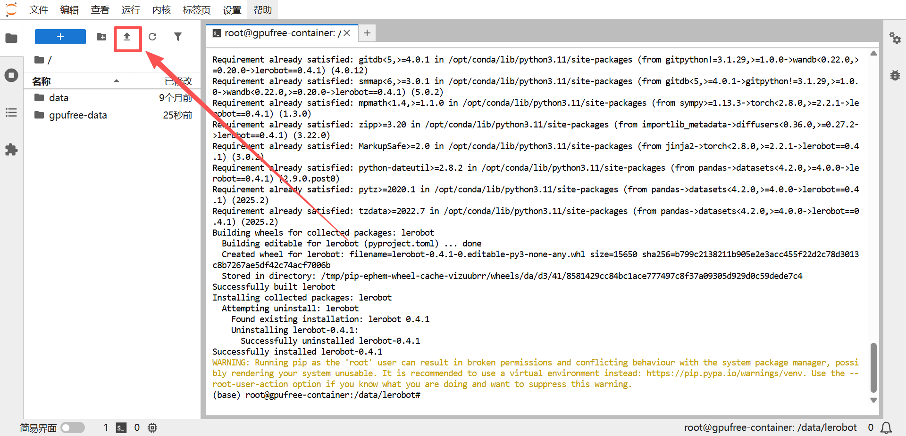
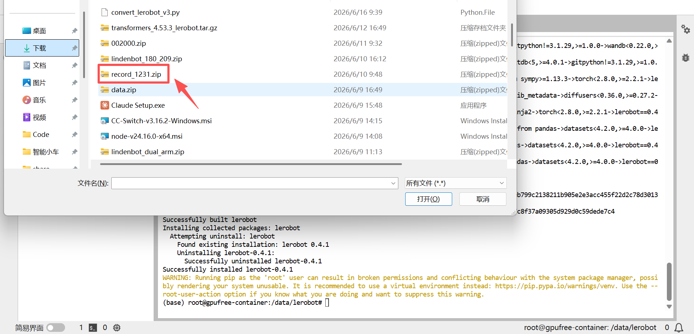
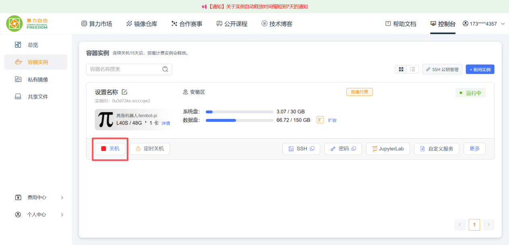
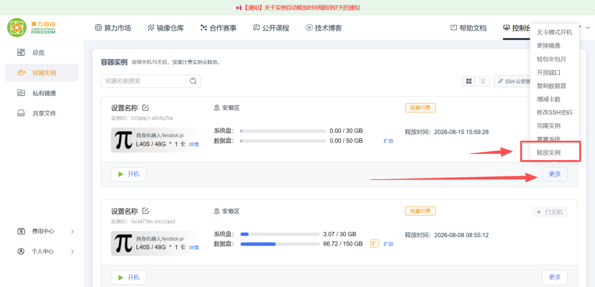
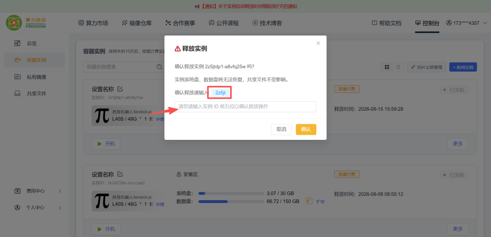
02核心原理：云训练 ↔ 真机推理的闭环课段 1 收尾 + 课段 2 · 激活旧知 · 8 min
通俗类比：这就像"厨师在中央厨房练手艺（云端 GPU），学成后回到家里做饭（本地机械臂）"。训练吃算力（几小时到几天的矩阵乘法），推理吃实时性（60 Hz 内必须吐出动作）。两者天然分离，所以工程上分工：云上练模型、本地跑部署。
训练侧：LeRobot 镜像把 CUDA、PyTorch、LeRobot 依赖预装好，一条 pip install -e . 即完成源码安装。数据靠 zip 上传，训练产出的 checkpoints/last/pretrained_model 是一个自包含目录（config + 权重 + 处理器），下载回本地即可用。
推理侧：推理复用了采集命令 lerobot-record，但去掉了 --teleop，改为加 --policy.path=/…/checkpoints/last/pretrained_model。此时每个控制周期的数据流变成：三摄像头图像 + 6 维状态 → 喂给策略 → 得到 100 步动作块 → 取前 n 步下发给关节 → 下一周期再推理。日志里 'policy': {input_features: observation.images.left/side (3,480,640), observation.state (6,), output_features action (6,)} 就是这份"策略契约"。episode_time_s=60 让机器人有一分钟自主发挥。
为什么 repo_id 加 eval_ 前缀：推理也要开启 recorder 记录表现（方便回看与评估），但这些数据不是训练原料，用 eval_ 命名和训练集彻底分开，避免后来者把"机器人的尝试"误当成"人类示范"混进训练。
lerobot-record --teleop …，动作来源是人掰主臂；② EXP-02 训练产出 checkpoints/last/pretrained_model 自包含目录（config + 权重 + processor）。推理就是把 --teleop 换成 --policy.path——动作来源从"人"变成"模型"，命令几乎没变。cd /data/lerobot/ + pip install -e .，安装完成后终端无报错返回提示符，即可进入训练流程（第 11 章）。'policy': {input_features: observation.images.left/side (3,480,640), observation.state (6,), output_features action (6,)}——这正是策略的输入输出契约：三路图像 + 6 维状态进、6 维动作出（第 12 章）。03环境与材料课段 3 · 示证新知 · 15 min
- ✓云侧：gpufree.cn 账号（个人付费），L40S 实例 + LeRobot 镜像，JupyterLab 访问
- ✓本地：LZ-XL01 双臂平台、
lerobotconda 环境、串口/摄像头 udev 就绪 - ✓数据：EXP-02 打包的
put_cube_plate.zip（云端训练时上传） - ✓模型：训练完成的
checkpoints/last/pretrained_model（云端下载或本地原生产出） - ✓任务布置：桌上放红方块与盘子，初始摆位与采集时一致
- ✓准备数据：本地 zip 打包核对大小无误后再上传，避免云端反复重传
- ✓关机习惯：实例控制台提前收藏书签；释放确认要复制 ID 前五位
云上全程的操作动线（按顺序执行，一步都别跳）：
| 阶段 | 控制台 / 终端动作 | 完成标志 |
|---|---|---|
| 开机 | 租实例 → 选 L40S → 搜"lerobot"镜像 → 创建 | 实例状态 RUNNING |
| 部署 | JupyterLab 新终端：cd /data/lerobot/ + pip install -e . | 终端无报错返回提示符 |
| 上传 | JupyterLab 上传按钮 / scp 传 zip 并解压到缓存目录 | 数据集目录可见 parquet |
| 训练 | lerobot-train（§5 第二条） | Checkpoint / End of training |
| 回收 | 下载 pretrained_model → 关机 → 课程结束释放实例 | ID 前五位确认弹窗通过 |
04实操步骤课段 5~6 · 应用新知 · 2×15 min
cd /data/lerobot/ 与 pip install -e . 完成安装。~/.cache/huggingface/lerobot/<名>/ 对应位置。pretrained_model 到本地推理机，摆好红方块与盘子，运行推理命令（§5 第二条）。Recording episode 0 出现后机器人开始自主抓取，看满 60 秒或按一次 Ctrl+C 退出。收工后：云实例 → 更多 → 释放实例（复制确认 ID 前五位）。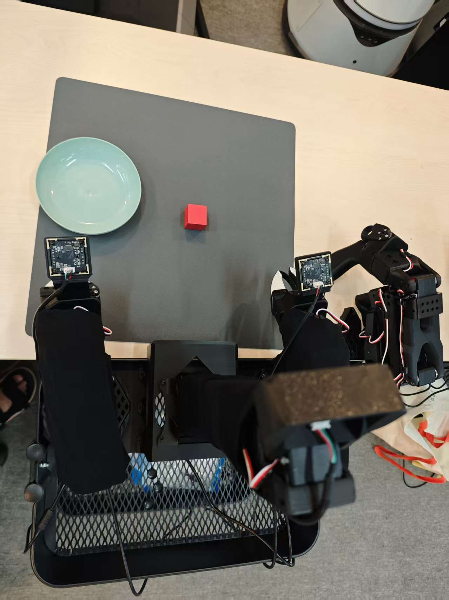
Recording episode 0 出现后机器人开始自主抓取，看满 60 秒自动退出或 Ctrl+C 仅按一次；连按会导致机械臂姿态异常，尾部 FATAL / 核心已转储提示属于正常清理噪音。put_cube_plate.zip 传到云端，解压到 ~/.cache/huggingface/lerobot/liming/put_cube_plate/ 对应位置，确认 parquet 文件可见即可开始训练（第 11 章）。05关键命令随课段 5 / 6 对照使用
# ── 云实例部署（第 11 章） cd /data/lerobot/ pip install -e . # ── 云端训练（与第 10 章同款，数据已上传） lerobot-train --dataset.repo_id=liming/put_cube_plate --policy.type=act --policy.repo_id=put_cube_on_plate_act --policy.push_to_hub=false --batch_size=8 --steps=1000 --output_dir=./outputs/put_cube_on_plate_act --policy.device=cuda --num_workers=4 --wandb.enable=false --log_freq=100 --save_freq=1000 --eval_freq=1000 # ── 本地真机推理（第 12 章原文命令：record + policy.path，无 teleop） rm -rf /home/lz-xl01/.cache/huggingface/lerobot/liming/eval_put_cube_plate lerobot-record --robot.type=so101_follower --robot.port=/dev/arm_slave_left --robot.id=left_follower_arm --robot.cameras='{left: {index: 0, fps: 30, width: 640, height: 480, video_backend: av}, side: {index: 2, fps: 30, width: 640, height: 480, video_backend: av}}' --display_data=true --dataset.repo_id=liming/eval_put_cube_plate --dataset.num_episodes=1 --dataset.single_task="Put red cube into plate" --dataset.push_to_hub=false --dataset.episode_time_s=60 --policy.path=/home/lz-xl01/lerobot-0.4.1/outputs/put_cube_on_plate_act/checkpoints/last/pretrained_model
- ✓repo_id 必须加
eval_前缀：推理记录与训练集隔离。 - ✓episode_time_s=60：给自主执行留足时间，可按需延长。
- ✓key 命令不含 teleop：日志显示
teleop: None，动作完全来自策略。 - ✓退出：时间到自动退出，或 Ctrl+C 一次；连按会导致机械臂姿态异常（KeyboardInterrupt 落在 busy_wait 里属正常）。
FATAL: exception not rethrown 或"核心已转储"提示——这属于 pynput 清理期的正常噪音，确认已打印 Exiting 即可忽略。06动画演示：云服务器 ↔ 真机推理链路课段 4 · 示证新知 · 12 min
闭环完成的标志：数据从人来，模型从云来，动作全靠模型自己出。
四段链路各有自己的完成信号：上传后能看到 parquet 文件、训练日志出现 End of training、下载后目录含 pretrained_model、真机日志出现 Recording episode——哪个信号缺失就回查哪一段。
07互动练习：显存与云租费估算器课段 7 · 应用新知 · 10 min
经验公式：激活≈ batch × 分辨率系数 × 模型档位 + 权重常数，仅供开机前拍板用；实际以 nvtop / 平台监控为准。
08常见问题课段 8 · 融会贯通 · 13 min
- ✓推理时显存不足：确认图片分辨率参数与训练一致（(3,480,640)），关掉 --display_data 的高负载预览，减小 batch 类参数。
- ✓找不到 policy.path：路径必须精确到
checkpoints/last/pretrained_model目录本身（不是 checkpoints），内含 config 与权重。 - ✓启动报 Mismatch…Press ENTER：直接 ENTER 沿用现有校准文件。
- ✓机器人一动不动：检查 policy.path 是否加载成功（看 Loading weights 日志）、任务初始摆位是否与训练一致、episode_time_s 是否太短。
- ✓云端 pip 慢 / JupyterLab 传大文件断：换国内源、分卷上传 zip 或改用 scp/rsync。
- ✓忘记关机被扣费：下机前固定动作——控制台 → 实例 → 关机；课程结束 → 更多 → 释放实例（复制 ID 前五位确认）。
- ✓检查点拷到推理机后加载失败：
pretrained_model必须整目录传输（config.json、权重、processor 缺一不可），打包压缩时保留目录层级。
| 报错 / 现象 | 原因 | 处置 |
|---|---|---|
CUDA out of memory | 推理分辨率与训练不一致或同卡混跑 | 对齐分辨率、nb 单任务占卡 |
Loading weights…failed | 路径指错 / 下载不完整 | 校验目录结构与文件大小 |
KeyboardInterrupt in busy_wait | Ctrl+C 打断帧循环 | 正常退出，只按一次 |
| eval_ 数据集混入训练 | repo_id 忘加前缀 | 重建带 eval_ 的 repo_id |
09拓展阅读课段 8 · 融会贯通
command/6_inference.sh 把推理命令参数化（模型名、任务名一键切换），量产部署时照抄其组织方式；② 检查点目录里的 config.json 记录了训练全部超参——换机部署时它是"自解释说明书"；③ 进一步可研究 ONNX / TensorRT 导出与 Isaac Lab 仿真回放，把真机验证前置到仿真；④ 多机位部署时思考：推理 60 Hz 下每一步都要过模型吗？还是块内复用（chunk 机制本身就是为此设计）。10思考题课段 8 · 融会贯通
--teleop 的采集命令和带 --policy.path 的推理命令接反（比如推理时忘了删 teleop），系统行为会有什么差别？从"动作来源"的角度解释。